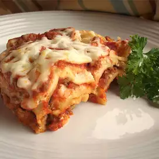

Simply Traditional Lasagna

A traditional lasagna, with about half the time and effort!
I always cook extra to have leftovers, but the more I cook, the more they eat!
Serve with garlic toast and salad.
INGREDIENTS
- 1 pound ground beef
- 1 pound bulk Italian sausage
- ½ cup warm water
- 1 cup sliced black olives
- 1 pinch basil
- 2 teaspoons garlic powder
- 1 tablespoon dried oregano
- 1½ teaspoons dried sage
- 2 teaspoons ground black pepper
- 2 tablespoons minced garlic
- 1 tablespoon dried onion flakes
- 2 (14 ounce) jars marinara sauce
- 1 (16 ounce) package lasagna noodles
- 8 ounces ricotta cheese
- 1 pound mozzarella cheese, shredded
STEPS
Step 1
- Brown the ground beef and Italian sausage in a large skillet over medium-high heat.
Drain excess grease. Stir in the water and black olives, and season with basil,
garlic powder, oregano, sage, pepper, minced garlic, and onion flakes.
Simmer for about 15 minutes, stirring frequently. Stir in the marinara sauce,
and remove from the heat.
Step 2
- Preheat the oven to 375 degrees F (190 degrees C).
Step 3
- Place a layer of the meat and sauce in the bottom of a 9x13 inch baking dish.
Cover with a layer of dry noodles. Spread a thin layer of ricotta cheese over
the noodles, and sprinkle with a little mozzarella cheese. Cover with another
layer of sauce, and repeat layering ending with the meat and sauce on top.
Reserve about 1/2 cup of mozzarella cheese for later.
Step 4
- Bake for 45 minutes in the preheated oven, but check after 30 minutes depending
on how thick the lasagna is. Lasagna is cooked when you can easily stick a knife
into it. Sprinkle the reserved cheese over the top, and return to the oven for
about 10 minutes for a nice melted cheese topping.